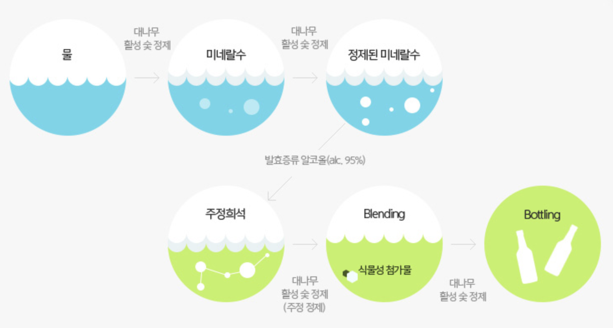

대나무 숯으로 4번 걸러 더 깨끗해진 참이슬 fresh
PRODUCT INFORMATION
| 용량 | 병 | 360 mL | 포켓 | 200 mL |
|---|---|---|---|---|
| 페트 | 400 mL / 500 mL / 640 mL / 1,800 mL | |||
| 알코올 | 16.9% | |||
| 특징 |
대나무 숯으로 4번 걸러 더 깨끗한 목넘김과 이슬형태의 곡선 라벨로 더욱 트렌디해진 참이슬fresh 입니다 |
|||
생산공정,
참이슬 fresh는 왜 깨끗할까요?

생산공법,
참이슬 fresh는 왜 깨끗할까요?
대나무 숯 4번 정제로 더 깨끗하게
특허 받은 대나무 활성 숯 정제 과정으로 참이슬 fresh 본연의 이슬같은 깨끗함을 실현했습니다.
엄선된 첨가물 사용으로 더 깨끗하게
유럽에서 ‘건강설탕’이라 불리며 ‘설탕’ 대신 사용되고 있는 식물성 감미료인 핀란드산 결정과당 등 깨끗한 첨가물만 사용하였습니다.